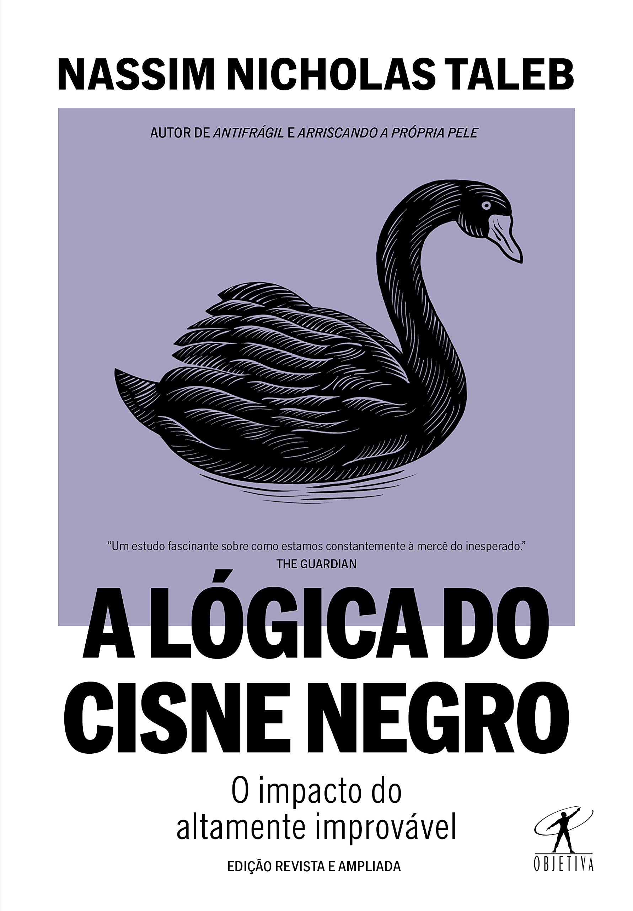
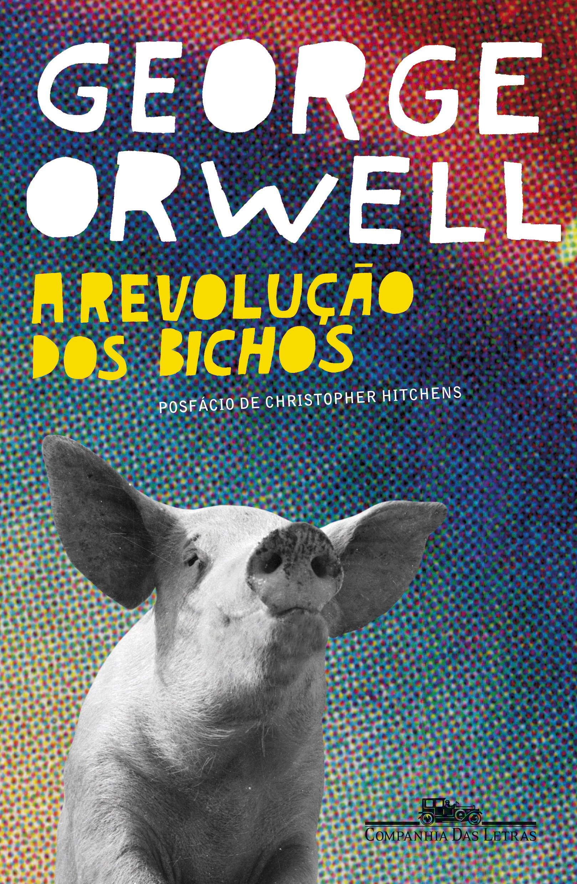
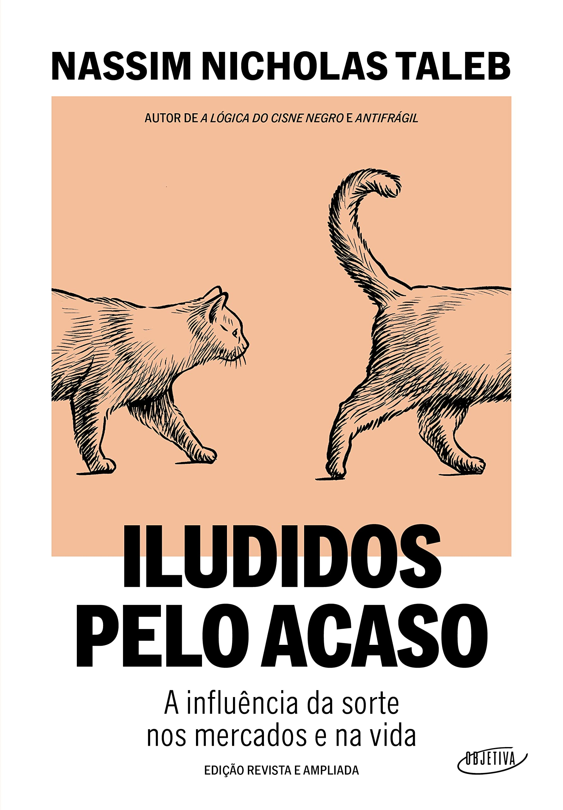
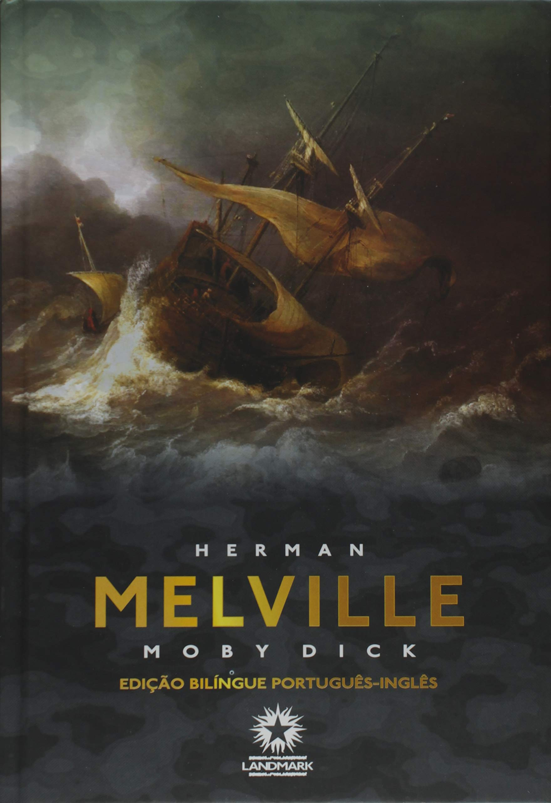

A Lógica do Cisne Negro: Escrito por Nassim Nicholas Taleb, o livro explora o conceito de
eventos
altamente improváveis e imprevisíveis, conhecidos como "cisnes negros". Taleb argumenta que esses eventos
têm um impacto enorme em nossas vidas, economia e sociedade, e que devemos estar preparados para eles, em
vez de confiar em previsões e modelos que não levam em conta sua ocorrência.

A Revolução dos Bichos: Escrito por George Orwell, é uma fábula satírica que critica o
totalitarismo. O
livro retrata a história dos animais de uma fazenda que se rebelam contra os humanos e tomam o controle,
apenas para se verem subjugados por uma nova elite de porcos. A obra aborda questões como poder, corrupção e
manipulação política.
Assim falou Zaratustra: Escrito por Nietzsche, apresenta a filosofia do "super-homem", que
busca a superação pessoal e a autoafirmação, questionando valores tradicionais como a
moralidade. A obra é considerada uma das mais influentes da filosofia ocidental.

Como Mentir com Estatística: Escrito por Darrell Huff, é um livro clássico que explora como os
números e
estatísticas podem ser usados para distorcer a verdade e enganar as pessoas. O autor examina várias técnicas
usadas para manipular dados estatísticos, revelando como muitas vezes somos enganados por gráficos, tabelas
e estatísticas mal interpretadas.

Essencialismo: Escrito por Greg McKeown, o livro propõe uma abordagem para identificar e focar
no que é
realmente essencial em nossas vidas, eliminando o excesso de informações e distrações. McKeown enfatiza a
importância de dizer "não" a atividades não essenciais e priorizar nossos recursos limitados, como tempo e
energia, para alcançar resultados significativos.
Hamlet: Escrita por William Shakespeare, é uma das peças mais famosas do autor e da literatura
mundial. A
tragédia de Hamlet, príncipe da Dinamarca, explora temas como vingança, traição, loucura e moralidade. A
peça é conhecida por seus diálogos complexos e profundos, e é considerada uma obra-prima do teatro
inglês.

Iludidos pelo Acaso: A Influência da Sorte nos Mercados e na Vida: Escrito por Nassim Nicholas
Taleb, o
livro examina como a sorte e o acaso desempenham um papel fundamental em nossas vidas e na tomada de
decisões, especialmente em áreas como finanças e negócios. Taleb questiona a crença na habilidade humana de
prever e controlar eventos futuros, destacando a importância da aleatoriedade e incerteza em nossas
vidas.

Moby Dick: Escrito por Herman Melville, é um romance clássico que conta a história de um
capitão chamado
Ahab, obcecado em caçar uma baleia branca gigante chamada Moby Dick. A obra aborda temas como a obsessão, a
vingança, a natureza humana e a relação entre o homem e a natureza, sendo considerada uma das obras-primas
da literatura americana.
O Mito de Sísifo: Escrito por Albert Camus, é um ensaio filosófico que aborda o absurdo da
condição
humana. Camus argumenta que a vida é essencialmente absurda e sem sentido, mas ainda assim devemos encontrar
significado e propósito nessa condição absurda. O livro questiona a busca do sentido da vida e reflete sobre
a existência humana em um universo indiferente.

Uma Breve História do Tempo: Escrito por Stephen Hawking, é um livro de divulgação científica
que explora
os princípios da cosmologia e a compreensão científica do universo. Hawking aborda conceitos complexos como
a gravidade, a teoria da relatividade e o Big Bang de forma acessível, e explora questões fundamentais sobre
o tempo, o espaço e a natureza do universo, tornando a física teórica e a cosmologia compreensíveis para
leitores leigos.
Voltar para Blog